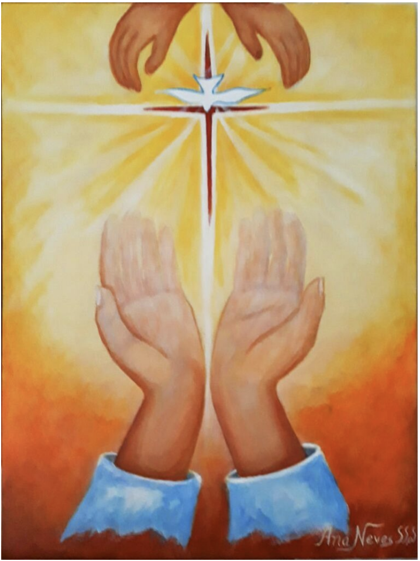

Espiritualidade
A paz depende também de nós
 20 de Dezembro de 2020
20 de Dezembro de 2020
.png)
Ao ver tantas situações de sofrimento em nosso País e no mundo, tantas tragédias causadas pela natureza ou pela violência humana, conflitos e guerras em diferentes países, preconceito, fome, miséria, destruição da natureza, abusos de crianças, corrupção e todo tipo de crimes, sinto que estamos chegando ao limite.
Muitas vezes, eu me pergunto: o que está acontecendo com nosso mundo? O que está acontecendo no coração do ser humano? Parece-me que estamos colhendo os frutos do ódio, da exploração, da ganância, da perda dos referenciais de fé e da falta de ética e cuidado com os seres humanos e com nosso planeta.
Mas será que há alguma coisa que podemos fazer para reverter essa realidade? Com certeza, há, mas depende de cada ser humano, de cada pessoa fazer a sua parte. Num Universo onde tudo está interligado (cf. Laudato Si’), tudo o que acontece ao nosso redor influiu dentro de nós. Mas também o que acontece dentro de nós influiu no mundo a nosso redor.
Por isso há uma grande variedade de pequenas ações que estão a nosso alcance e podem fazer uma grande diferença. Por exemplo, se queremos paz no mundo, podemos buscar a paz e a reconciliação dentro de nós e com as pessoas com quem nos desentendemos. Perdoar e pedir perdão pode ser o começo de uma grande transformação.
Cultivar a serenidade de espírito, a harmonia, o acolhimento, a tolerância diante das outras pessoas pode transformar o ambiente de trabalho, diminuir o estresse e tornar a vida mais gratificante para mim e para os outros…
A meditação e a oração têm o poder de criar o ambiente interior onde as mudanças do pensamento e das atitudes se tornam reais. Cultivar a raiva, o ódio, a crítica destrutiva, a reclamação vai gerar atitudes destrutivas, negativas que prejudicam a mim mesma e aos outros. Mas podemos mudar nossos pensamentos. Bons pensamentos geram bons sentimentos, os quais, por sua vez, levam a atitudes positivas que geram ações que constroem o bem comum.
Acreditando nisso, convido você a rezar comigo esta oração, pedindo a Deus a graça da transformação deste mundo violento num mundo de paz, começando com a mudança do meu e do seu mundo interior, de tudo aquilo que ainda precisa ser pacificado e transformado em amor.
Oração pela Paz
Senhor, diante de ti, trazemos a dor da humanidade
que luta e sofre em busca de paz.
Trazemos a angústia das vítimas da violência,
injustiças e opressão.
Trazemos o desespero dos que perderam
os entes queridos em situações de conflito.
Trazemos também o nosso coração ferido,
sedento de tua paz e de teu amor.
Queremos, ó Deus, consagrar o dia de hoje
à causa da paz, para que chegue o tempo
em que todos os dias serão dias de paz.
Dá-nos, Senhor, tua luz para construirmos
a paz em nossos relacionamentos.
Dá-nos, Senhor, tua paz, para aprendermos
a acolher sem preconceitos
e respeitar a dignidade de cada ser humano.
Dá-nos, Senhor, tua paz, para reconhecermos,
em cada pessoa, o nosso semelhante e,
em toda a criação, o dom generoso de teu amor.
Transforma a violência e a injustiça
que habitam dentro de nós em dom do amor
e compaixão que geram paz.
Amém.
Irmã Ana Elídia Caffer Neves, SSpS Jornalista, membro da Equipe de Comunicação Congregacional e coordenadora de Comunicação da Província Stella Matutina (BRN) .
Artigos Anteriores